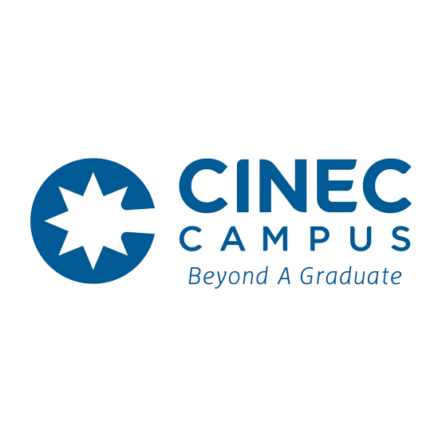

CINEC CAMPUS
(SRI LANKA'S PREMIER PRIVATE MARITIME & HIGHER EDUCATION CAMPUS)

HISTORY OF CINEC (PRIVATE CAMPUS)
- 1990: Established as the Colombo International Nautical and Engineering College (CINEC) in Crow Island, Mattakkuliya.
- 2002: Shifted and expanded into a state-of-the-art main campus complex in Malabe.
- 2014: Recognized as a degree-awarding non-state (Private) higher education institution.
- Present: Grown into Sri Lanka's leading private maritime, engineering, management, and health science training institute.
AVAILABLE FACULTIES (PRIVATE DEGREE PROGRAMS)
- Faculty of Maritime Sciences – සාගර විද්යා පීඨය
- Faculty of Engineering & Technology – ඉංජිනේරු හා තාක්ෂණ පීඨය
- Faculty of Management and Social Sciences – කළමනාකරණ හා සමාජීය විද්යා පීඨය
- Faculty of Health Sciences – සෞඛ්ය විද්යා පීඨය
- Faculty of Humanities & Education – මානවශාස්ත්ර හා අධ්යාපන පීඨය
- Faculty of Aviation – ගුවන්සේවා අධ්යයනාංශය
GO TO OFFICIAL WEBSITE OF CINEC (PRIVATE)
GO TO HOME PAGE